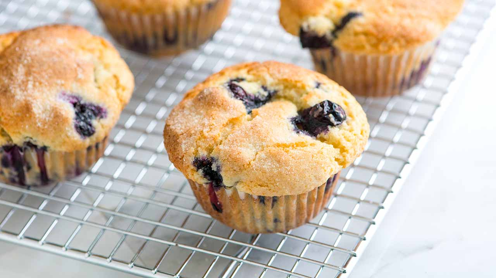

Blueberry muffins recipe

Description
You only need one bowl to make this easy blueberry muffins recipe with blueberries, flour, sugar, vanilla, and vegetable oil. We’ve been making these easy muffins for years and are always happy that we did.
Ingredients
- 1 ½ cups (195g) all-purpose flour
- 3/4 cup (150g) granulated sugar, plus 1 tablespoon for muffin tops
- 1/4 teaspoon fine sea salt
- 2 teaspoons baking powder
- 1/3 cup (80ml) neutral-flavored oil, safflower, avocado, and vegetable oil are great
- 1 large egg
- 1/3 to 1/2 cup (80ml to 120ml) milk, dairy and non-dairy both work
- 1 ½ teaspoons vanilla extract
- 6 to 8 ounces fresh or frozen blueberries, generous 1 cup
Directions
Prepare oven and muffin cups
- Heat oven to 400° Fahrenheit (204° C). For big-topped muffins, line 8 standard-size muffin cups with paper liners. For standard-size muffins line 10 muffin cups. Lightly grease or spray the tops of the muffin tin with oil to prevent the oversized tops from sticking. (High-quality nonstick pans may not require this.)
Make batter
- Whisk the flour, sugar, baking powder, and salt in a large bowl.
- Add oil to a measuring jug that holds at least 1 cup. Add the egg then fill the jug to the 1-cup line with milk (1/3 to 1/2 cup milk). Add vanilla and whisk to combine.
- Add milk mixture to the bowl with dry ingredients then use a fork to combine. Do not over mix. (The muffin batter will be quite thick — see note below for more details). Fold in the blueberries.
Bake muffins
- Divide the batter between muffin cups. (If making big-topped muffins, the batter will come to the tops of the paper liners). Sprinkle a little sugar on top of each muffin.
- Bake muffins 15 to 20 minutes or until tops are no longer wet and a toothpick inserted into the middle of a muffin comes out with crumbs, not wet batter. Transfer to a cooling rack.
- To store, place them in a plastic bag, seal, and store at room temperature for up to 3 days. To freeze, wrap them tightly in aluminum foil or place them in freezer bags. Freeze for up to 3 months.
- Leave on the tray for a couple of mins to set and then lift onto a cooling rack.